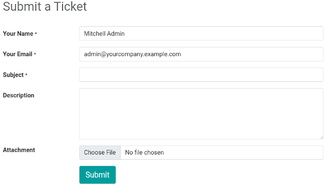
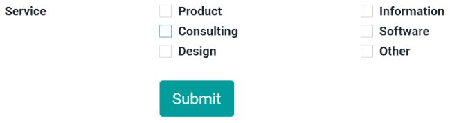

Interacción del cliente¶
Odoo ofrece varias formas de interactuar con clientes y de que sus clientes interactúen con su sitio web.
Calificación de los productos¶
Los clientes pueden calificar los productos. Esta es una gran manera de promocionar sus productos o servicios, ya que las reseñas pueden influenciar los procesos de compra. Para activar la función de calificación debe ir a la página de su tienda, seleccione un producto, vaya a y active la Calificación.

Nota
Solo los usuarios del portal que hayan comprado el producto o el servicio podrán dejar su calificación.
Truco
Puede ocultar las reseñas de los clientes, solo tiene que hacer clic en el botón Visible que se encuentra junto a la reseña que se publicó.
Chat en vivo¶
Está disponible un bot de chat que puede simular conversaciones humanas con los visitantes del sitio web mediante mensajes de texto en una caja especializada.
Formularios de contacto¶
Servicio de asistencia¶
Es probable que los clientes necesiten ayuda después de comprar un producto o servicio. Es posible crear un formulario de contacto con el que se creará un nuevo ticket para el equipo de soporte una vez que se haya llenado.
Para agregar un formulario de contacto debe crear una nueva página () si es necesario, arrastre y suelte un bloque de Formulario desde la sección Contenido dinámico hasta la página. Ya que lo haya colocado, haga clic en el formulario (mientras se encuentre en el modo Editar), y en el campo de Acción seleccione Crear un ticket. Después puede seleccionar a qué equipo del servicio de asistencia se le debe asignar este ticket.

Contáctenos¶
Con una página de “Contáctenos” será más fácil que sus clientes o prospectos se pongan en contacto con su empresa.
Para tener una página de “Contáctenos” cree una nueva página si es necesario () y haga clic en . Después, arrastre y suelte el bloque del Formulario en la página. Seleccione el formulario y defina en el campo Acción qué es lo que se debe de hacer una vez que se haya enviado.
Al hacer clic en un campo, o al añadir un nuevo campo (+ Campo), puede seleccionar el Tipo del mismo. Esto habilitará diferentes opciones, como varias casillas de verificación que los clientes pueden usar para indicar qué servicios les interesa, por ejemplo.

Boletín de noticias¶
Los clientes se pueden suscribir a su boletín para obtener actualizaciones sobre las actividades de su comercio electrónico. Los visitantes que se suscriban al boletín se agregar de inmediato a la lista de envío de la aplicación Marketing por correo electrónico. Puede elegir un bloque de boletín, una ventana emergente de boletín, o ambos.
Ventana emergente: muestra una caja de boletín cuando los clientes bajan en la página.
Bloque: muestra un campo en la página donde los clientes se pueden suscribir, solo tienen que ingresar su correo.
Puede configurar el bloque de boletín según las diferentes Plantillas. Para hacerlo, vaya a haga clic en el bloque y seleccione una ´plantilla en la sección Bloque de boletín. Hay tres plantillas disponibles:
Suscripción por correo electrónico: los visitantes pueden inscribirse mediante su correo electrónico al boletín de noticias, sin ninguna otra opción del contenido. El contenido se definite en en el campo de Boletín;
Suscripción a SMS: es lo mismo que la suscripción por correo electrónico, pero en SMS;
Formulario de suscripción: permite agregar varios campos, así como una casilla de verificación para que el visitante esté de acuerdo con las políticas de privacidad de su sitio web.

Truco
También puede seleccionar que la suscripción al boletín sea una acción al crear un formulario de contacto, lo que le permitirá el mismo nivel de personalización. Asegúrese de agregar casillas de verificación donde los visitantes acepten que se les agregue a la lista de correo.